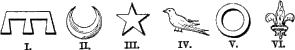

Cadency, marks of, otherwise called Distinctions, or Differences(fr. brisures): variations of the original arms of a family, or marks attached to them for the purpose of pointing out the several branches, and the relation in which they stand to each other and to their common ancestor.
In ancient heraldry "a plain Label" (as Sir N. H. Nicolas remarks), "most frequently azure, appear to have been the distinction of the eldest son and heir apparent;" as, for instance, at the Siege of Caerlaverock, Maurice de BERKELEY, who joined in the expedition, is described as having over his arms(gules, crusilly with a white chevron) a label azure, because his father was still alive:
"E. Morices de Berkelée, Croissillie o un chievron blanc,
Ki compaigns fu de cele alée, Ou un label de asur avoit,
Banier ot vermeille cum sanc, Por ce que ses peres vivoit."
And again, one bore his arms in no manner different from his father[the Earl of Lennox] except the azure label:
"Cele au Conte de Laonois .... Ne la portoit par nul aconte
Patrik de Dunbar, fiz le Conte Fors de une label de inde diverse."
It also appears "that younger sons bore the label variously charged, sometimes with the whole or part of their mother's arms, or the arms of a distinguished family from which they were descended; that more distant branches changed the colours, or charges, of the coat; placed a bend over it; surrounded it with a bordure, or assumed a canton, plain or charged."
Although the charge of tinctures, and the addition, removal, or alteration of charges are very frequently marks of cadency, it must not be supposed that all families of the same name, and between whose arms there is some resemblance, are descended from the same ancestors, for the arms of ancient families have often been very unjustly granted with slight alteration to persons whose relation to such families consisted only in similarity of name.
The differences now in use may be divided into two classes; those used by the royal family, and those which should be borne by all others. The sons and daughters of the sovereign all bear labels of three points argent. That of the Prince of Wales is plain, but those of the other princes and princesses are charged with crosses, fleur-de-lis, hearts, or other figures for the sake of distinction. Princes and princesses, being the sons and daughters of the above, are distinguished by labels of five points charged in the same manner. All such differences should be borne on the arms, crest, and supporters.
The differences now in use for all families except that of the sovereign may be partially traced to the time of Edward III. They are as follows:--
 FIRST HOUSE.
First son. A label of 3 points. Fourth son. A martlet.
Second son. A crescent. Fifth son. An annulet.
Third son. A mullet. Sixth son. A fleur-de-lis.
Some heralds pretend that the seventh son was marked by a rose, the eighth by a cross moline, and ninth by eightfoil; but this theory does not seem to be borne out in practice.
This first son of the first son of the first house bears a label upon a label(or more agreeably to ancient custom a label of five points). The second a label charged with a crescent, and so on for all other sons of this branch.
SECOND HOUSE. First son. A crescent charged with label of
three points.
Second son. A crescent charged with a crescent.
And so on for the rest, but it is not usual to bear more than double differences. There are no differences for sisters(except in the royal family), as they are all equal, but they should bear the differences which pertain to their fathers.
Crescents, mullets, &c., used as differences, should be drawn smaller than usual, to distinguish them from ordinary charges. They may be placed upon any part of the arms which is most convenient. There does not appear to be any rule respecting their tinctures.
Sire Johan FILOL, de veer a un quarter de goules. Sire Johan son filz meisme les armes en le quarter un molet de or--Roll, temp. ED. II.